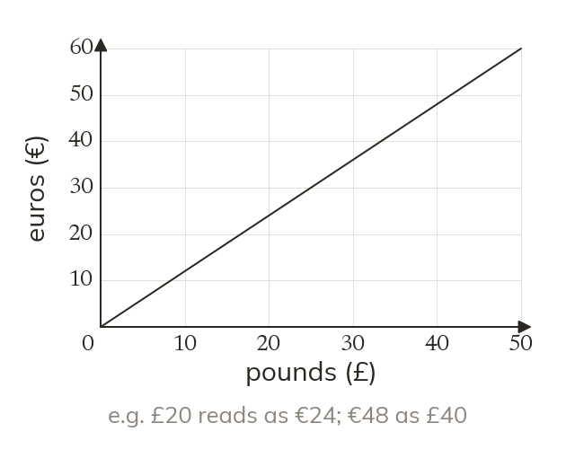
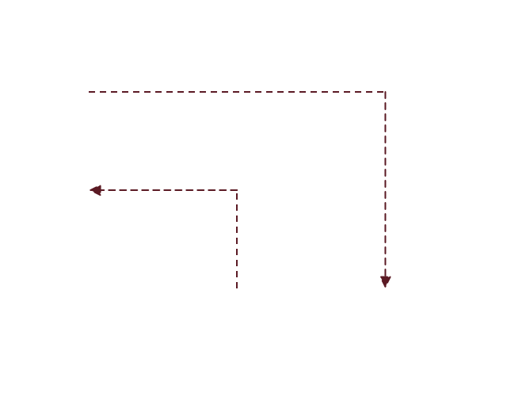
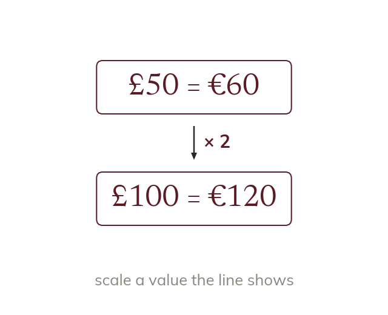
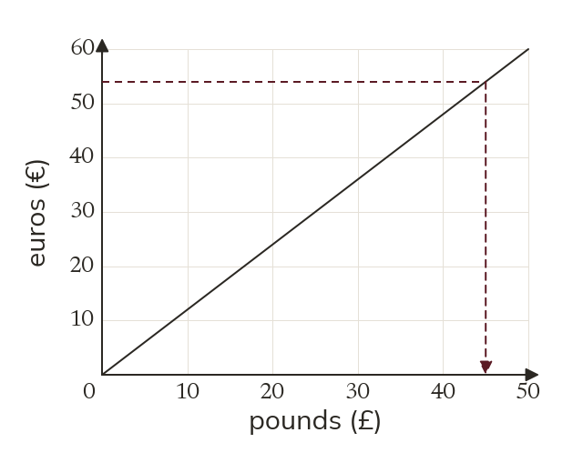
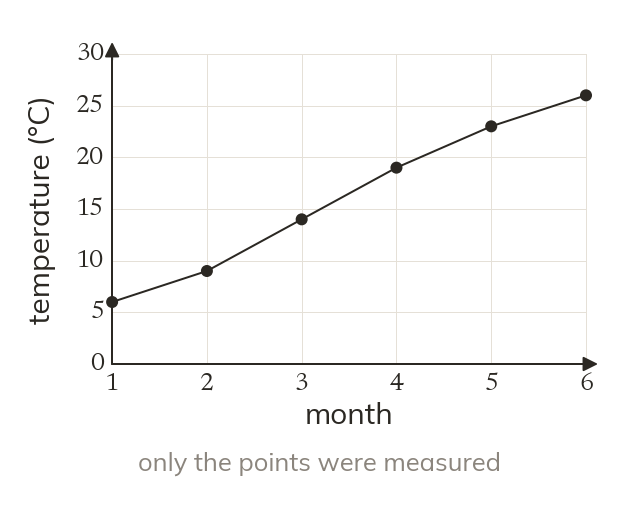
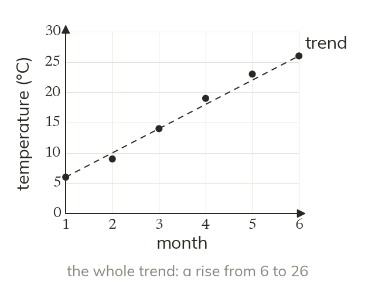
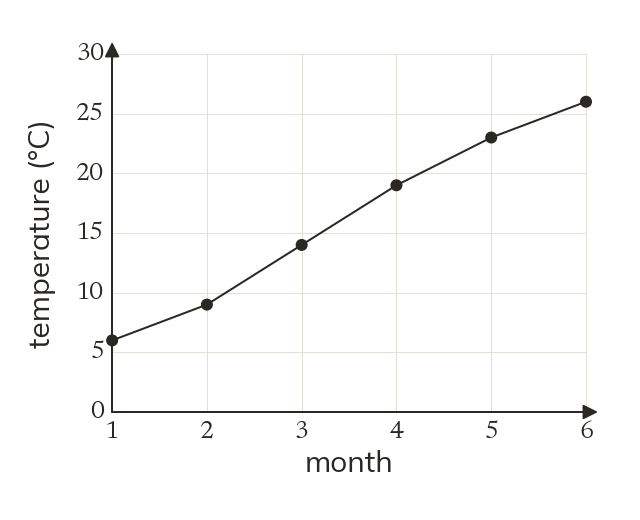
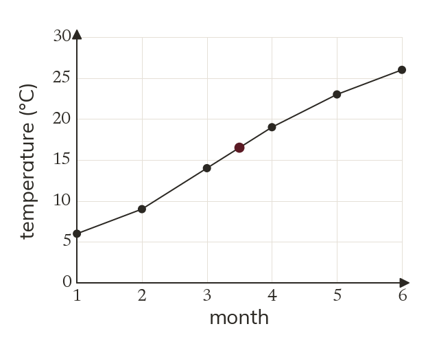

Topic 9.11 · Speed-Time Graphs and Area · Lesson 4 of 5
Conversion Graphs
Before a holiday, a conversion graph turns pounds into euros at a glance. Today is reading one in both directions, and then reading graphs that show change over time.
By the end you’ll know…
A conversion graph is a straight line through the origin, because the two units are in direct proportion.
It converts in both directions: read across from one axis and down to the other.
Values beyond the plotted line can be found by scaling, since the relationship is proportional.
A time-series graph shows a quantity measured at intervals over time, with the points joined to show the trend.
Only the plotted points are measured values; the joining lines are an estimate of what happened in between.
By the end you can
G3Use a conversion graph to convert between units in both directions.
G5Interpret other time-series graphs, describing trends over time.
Work down the page at your own pace. Write every answer in your book first, then click to check it.
01
Do Now
About 5 minutes
1
Convert 2.5 litres to millilitres.
2500 ml.
2
Convert 750 g to kilograms.
0.75 kg.
3
The line y = 2x + 1 is drawn on a graph. What is y when x = 3?
7.
4
On the same line, what is x when y = 11?
5.
Remember these?
LAST LESSONA velocity-time graph is a triangle with base 10 seconds and height 8 m/s. Find the distance.
½ × 10 × 8 = 40 m.
LAST WEEKA block has mass 450 g and volume 50 cm³. Find its density.
450 ÷ 50 = 9 g/cm³.
LAST TERMFind the simple interest on £800 at 2.5% per year for 4 years.
800 × 0.025 × 4 = £80.
LAST YEARFind the area of a circle of radius 3 cm, in terms of π.
9π cm².
02
Learn
Read each card, then follow the worked examples one step at a time.


A straight line through the origin
Two units in direct proportion give a straight line through the origin. It converts in both directions.
A conversion graph is a straight line through the origin, because the two units are in direct proportion. It converts in both directions.

Beyond the line
Find a value past the line by scaling one it shows. £100 is twice £50.
A value past the end of the line is found by scaling one it does show. £100 is twice £50.
WORKED EXAMPLE A
Convert £30 to euros.
WORKED EXAMPLE B
Convert €54 to pounds.

YOUR TURN · a
The line joins (0, 0) and (50, 60), in pounds and euros. Convert £10 to euros.
€12
YOUR TURN · b
On the same line, convert €18 to pounds.
£15
YOUR TURN · c
The graph only reaches £50. Convert £150 to euros.
£50 is €60, so £150 is 3 × 60 = €180.
YOUR TURN · d
The graph shows £50 = €60. Find the exchange rate in euros per pound.
60 ÷ 50 = €1.20 per pound
03
Check your understanding
Pick an answer. If it's wrong, the feedback tells you which mistake it was.
A conversion line joins (0, 0) and (50, 60), pounds across and euros up. What is £25 in euros?
Yes.£50 = €60, so £25 is half: €30.
Not quite. You converted the wrong way. Go up from £25 to the line: €30.
Not quite. Go up to the line, then across: €30.
Not quite. Scale, don't add: £25 is half of £50, so half of €60.
Why does a conversion graph pass through the origin?
Not quite. Not every graph does. This one does because £0 is €0.
Yes.£0 is always €0, so the line starts at the origin.
Not quite. Steepness is the exchange rate. The origin is there because £0 = €0.
Not quite. It's not the scale: £0 is worth €0.
On the same graph, what is €90 in pounds?
Not quite. That converted £ to €. Go from €90 across to the line: £75.
Not quite. Go from €90 across to the line, then down: £75.
Not quite. Scale up: €60 = £50, so €90 = £75.
Yes.€60 = £50, so €90 = 1.5 × £50 = £75.
04
Practise
mark as you go
Checkpoint. The line shows £50 = €60. Convert £35 to euros and €150 to pounds.Show your teacher before you go on
The graph converts kilograms (kg) to pounds (lb). Use it to convert 5 kg to pounds.
5 kg = 11 lb
2
Use the graph to convert 13.2 lb to kilograms.
13.2 lb = 6 kg
3
The graph stops at 10 kg. Convert 30 kg to pounds.
10 kg = 22 lb 30 kg = 3 × 22 = 66 lb
4
Is 7 kg more or less than 15 lb?
7 kg = 15.4 lb More than 15 lb
5
Why does the line pass through (0, 0)?
0 kg is 0 lb: the two units are in direct proportion
EXT
Find the number of pounds in 1 kg. Use it to convert 45 kg to pounds.
22 ÷ 10 = 2.2 lb in 1 kg 45 × 2.2 = 99 lb
05
Learn
Read each card, then follow the worked examples one step at a time.

A time-series graph
A time-series graph shows a quantity measured at intervals over time. The points are joined to show the trend.

Only the points are measured
The joining lines are an estimate of what happened in between. Describe the trend over the whole graph, not two neighbouring points.
WORKED EXAMPLE C
Describe the trend in the temperatures.

WORKED EXAMPLE D
Estimate the temperature halfway between months 3 and 4.

Then ask why it is only an estimatethe line assumes a steady rise between the two readings.
YOUR TURN · e
Monthly sales were 40, 45, 38, 50, 55, 60. Describe the trend.
Rising overall, apart from a dip in the third month.
YOUR TURN · f
Between which two months did sales rise the most?
Between months 3 and 4, by 12.
YOUR TURN · g
A tank's water level was 80, 72, 64, 56 cm at the end of each hour. Estimate the level at 2.5 hours.
About 68 cm, halfway between 72 and 64, assuming it fell steadily.
YOUR TURN · h
Why might the real level at 2.5 hours be different?
Only the hourly points were measured; the joining lines are an estimate.
06
Check your understanding
Pick an answer. If it's wrong, the feedback tells you which mistake it was.
Monthly rainfall was 60, 55, 70, 40, 35, 30 mm. What is the trend?
Not quite. Look at the whole series: after month 3 it keeps falling.
Yes. It falls from 60 to 30 overall, with a rise in month 3.
Not quite. Read the points: 60 down to 30, so falling.
Not quite. Six months is enough. The overall pattern is falling.
On a time-series graph, which values were actually measured?
Not quite. The lines only join the points. Only the points were measured.
Yes. Only the plotted points were measured. The lines just join them.
Not quite. Every plotted point was measured.
Not quite. Only the plotted points were measured, not values on grid lines.
Water levels of 30 cm and 36 cm are plotted for hours 2 and 3. What is the best estimate for halfway between?
Not quite.30 cm is the reading at hour 2. Halfway, with a steady change, it's about 33 cm.
Not quite.36 cm is the reading at hour 3. Halfway, with a steady change, it's about 33 cm.
Yes. Halfway between 30 and 36 is 33, if the level changed steadily.
Not quite. It's only an estimate: nothing was measured between the points.
07
Practise
mark as you go
Checkpoint. Weekly visitors were 120, 150, 140, 180, 210. Describe the trend and estimate the value halfway between weeks 4 and 5.Show your teacher before you go on
1
A museum's visitors from Monday to Saturday were 210, 240, 225, 260, 310 and 350. Describe the trend.
Rising overall Apart from a dip on Wednesday
2
Between which two days did the visitors rise the most? By how many?
Thursday to Friday 310 - 260 = 50 more visitors
3
The temperature was 14°C at 10:00 and 18°C at 11:00. Estimate the temperature at 10:30. Why is it only an estimate?
Halfway: (14 + 18) ÷ 2 = 16°C It assumes the temperature rose steadily between readings
4
A shop's monthly sales were £1200, £1150, £1100, £1300, £1050 and £1000. Describe the trend.
Falling overall Apart from a rise in month 4
5
On a time-series graph the points are joined with lines. Which values were actually measured?
Only the plotted points The lines between them are an estimate
EXT
Quarterly gas bills over two years were £300, £150, £100, £250, then £320, £160, £110, £270. Describe the pattern.
High in quarters 1 and 4 (winter), low in quarters 2 and 3 (summer) Each quarter is £10 to £20 higher in the second year
08
Exit ticket
On paper, on your own, then check
1
Why does a conversion graph between two currencies pass through the origin?
Nothing converts to nothing: the two amounts are in direct proportion.
2
A line joins (0, 0) and (40, 50), pounds across and euros up. Convert £16 to euros and €75 to pounds.
€20; £60.
3
Monthly sales were 30, 34, 29, 40, 46. Describe the trend.
Rising overall, apart from a dip in the third month.
Finished? Next lesson: 9.11.5 Mixed Graph Problems.
Practise more
After the lesson, or whenever you want more
Dr Frost
Log in, then search for a code to practise that skill.
178aDraw a conversion graph.
178bUse a conversion graph within the scale.
178cUse a conversion graph for a value outside the scale.